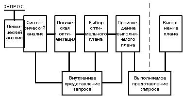
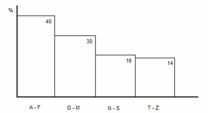
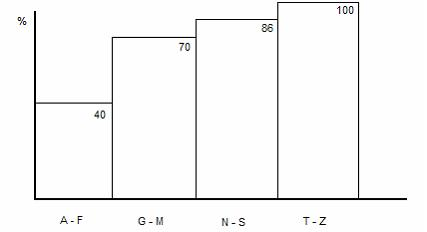

Оптимизация запросов
Оптимизация запросов - это:
а) функция СУБД, осуществляющая поиск оптимального плана выполнения запросов из всех возможных для заданного запроса,
б) процесс изменения запроса и/или структуры БД с целью уменьшения использования вычислительных ресурсов при выполнении запроса.
Один и тот же результат может быть получен СУБД различными способами (планами выполнения запросов), которые могут существенно отличаться как по затратам ресурсов, так и по времени выполнения. Задача оптимизации заключается в нахождении оптимального способа.
В реляционной СУБД оптимальный план выполнения запроса - это такая последовательность применения операторов реляционной алгебры к исходным и промежуточным отношениям, которое для конкретного текущего состояния БД (её структуры и наполнения) может быть выполнено с минимальным использованием вычислительных ресурсов.
В настоящее время известны две стратегии поиска оптимального плана:
- грубой силы путём оценки всех перестановок соединяемых таблиц;
- на основе генетического алгоритма путём оценки ограниченного числа перестановок.
Планы выполнения запроса сравниваются исходя из следующих факторов:
- потенциальное число строк, извлекаемое из каждой таблицы, получаемое из статистики;
- наличие индексов;
- возможность выполнения слияний (merge-join).
В общем случае соединение выполняется вложенными циклами. Однако этот алгоритм может оказаться менее эффективен, чем специализированные алгоритмы. Если у сливаемых таблиц есть индексы по соединяемым полям, или одна или обе таблицы достаточно малы, чтобы быть отсортированными в памяти, то исследуется возможность выполнения слияний.
Общая схема обработки запроса
Можно представить, что обработка поступившего в систему запроса состоит из фаз, изображенных на рис. 1.

Рисунок 1 - Фазы выполнения запроса
На первой фазе запрос, заданный на языке запросов, подвергается лексическому и синтаксическому анализу. При этом вырабатывается его внутреннее представление, отражающее структуру запроса и содержащее информацию, которая характеризует объекты базы данных, упомянутые в запросе (отношения, поля и константы). Информация о хранимых в базе данных объектах выбирается из каталогов базы данных. Внутреннее представление запроса используется и преобразуется на следующих стадиях обработки запроса. Форма внутреннего представления должна быть достаточно удобной для последующих оптимизационных преобразований.
На второй фазе запрос во внутреннем представлении подвергается логической оптимизации. Могут применяться различные преобразования, "улучшающие" начальное представление запроса. Среди преобразований могут быть эквивалентные, после проведения которых получается внутреннее представление, семантически эквивалентное начальному (например, приведение запроса к некоторой канонической форме), Преобразования могут быть и семантическими: получаемое представление не является семантически эквивалентным начальному, но гарантируется, что результат выполнения преобразованного запроса совпадает с результатом запроса в начальной форме при соблюдении ограничений целостности, существующих в базе данных. После выполнения второй фазы обработки запроса его внутреннее представление остается непроцедурным, хотя и является в некотором смысле более эффективным, чем начальное.
Третий этап обработки запроса состоит в выборе на основе информации, которой располагает оптимизатор, набора альтернативных процедурных планов выполнения данного запроса в соответствии с его внутреннем представлением, полученным на второй фазе. Для каждого плана оценивается предполагаемая стоимость выполнения запроса. При оценках используется статистическая информация о состоянии базы данных, доступная оптимизатору. Из полученных альтернативных планов выбирается наиболее дешевый, и его внутреннее представление теперь соответствует обрабатываемому запросу.
На четвертом этапе по внутреннему представлению наиболее оптимального плана выполнения запроса формируется выполняемое представление плана. Выполняемое представление плана может быть программой в машинных кодах, что не принципиально, поскольку четвертая фаза обработки запроса уже не связана с оптимизацией.
Наконец, на пятом этапе обработки запроса происходит его реальное выполнение. Это либо выполнение соответствующей подпрограммы, либо вызов интерпретатора с передачей ему для интерпретации выполняемого плана.
Стратегии оптимизации
Суть оптимизации заключается в поиске минимума функции стоимости от перестановки таблиц. Независимо от стратегии, оптимизатор обязан уметь анализировать стоимость для произвольной перестановки, в то время как сами перестановки для анализа предоставляются другим алгоритмом. Исследуемое множество перестановок может отличаться от всего пространства перестановок. Исходя из этого, обобщённый алгоритм работы оптимизатора можно записать так: «Перебор всех планов в поисках наилучшего»
Стратегия грубой силы
В теории, при использовании стратегии грубой силы оптимизатор запросов исследует все пространство перестановок всех исходных выбираемых таблиц и сравнивает суммарные оценки стоимости выполнения соединения для каждой перестановки. На практике, было предложено ограничить пространство исследования только левосторонними соединениями, чтобы при выполнении запроса одна из таблиц всегда была представлена образом на диске. Исследование нелевосторонних соединений имеет смысл если таблицы, входящие в соединения, расположены на более чем одном узле.
Для каждой таблицы в каждой из перестановок по статистике оценивается возможность использования индексов. Перестановка с минимальной оценкой и есть итоговый план выполнения запроса.
Синтаксическая оптимизация запросов
При классическом подходе к организации оптимизаторов запросов на этапе логической оптимизации производятся эквивалентные преобразования внутреннего представления запроса, которые "улучшают" начальное внутреннее представление в соответствии с фиксированными стратегиями оптимизатора. Характер "улучшений" связан со спецификой общей организации оптимизатора, в частности, с особенностями процедуры поиска возможных процедурных планов запросов, выполняемой на третьей фазе обработки запроса.
Поэтому трудно привести полную характеристику и классификацию методов логической оптимизации.
Простые логические преобразования запросов
Очевидный класс логических преобразований запроса составляют преобразования предикатов, входящих в условие выборки, к каноническому представлению. Имеются в виду предикаты, содержащие операции сравнения простых значений.
Преобразования запросов с изменением порядка реляционных операций
В традиционных оптимизаторах распространены логические преобразования, связанные с изменением порядка выполнения реляционных операций. Примером соответствующего правила преобразования в терминах реляционной алгебры может быть следующее (A и B - имена отношений):
(A JOIN B) WHERE restriction-on-A AND restriction-on-B
эквивалентно выражению
A WHERE restriction-on-A) JOIN (B WHERE restriction-on-B).
Здесь JOIN обозначает реляционный оператор естественного соединения отношений; A WHERE restriction - оператор ограничения отношения A в соответствии с предикатом restriction.
Хотя немногие реляционные системы имеют языки запросов, основанные в чистом виде на реляционной алгебре, правила преобразований алгебраических выражений могут быть полезны и в других случаях. Довольно часто реляционная алгебра используется в качестве основы внутреннего представления запроса. Естественно, что после этого можно выполнять и алгебраические преобразования.
Разумное преобразование запроса на SQL к алгебраическому представлению сокращает пространство поиска планов выполнения запроса с гарантией того, что оптимальные планы потеряны не будут.
Приведение запросов со вложенными подзапросами к запросам с соединениями
Основным отличием языка SQL от языка реляционной алгебры является возможность использовать в логическом условии выборки предикаты, содержащие вложенные подзапросы. Глубина вложенности не ограничивается языком, т.е., вообще говоря, может быть произвольной. Предикаты с вложенными подзапросами при наличии общего синтаксиса могут обладать весьма различной семантикой. Единственным общим для всех возможных семантик вложенных подзапросов алгоритмом выполнения запроса является вычисление вложенного подзапроса всякий раз при вычислении значения предиката. Поэтому естественно стремиться к такому преобразованию запроса, содержащего предикаты со вложенными подзапросами, которое сделает семантику подзапроса более явной, предоставив тем самым в дальнейшем оптимизатору возможность выбрать способ выполнения запроса, наиболее точно соответствующий семантике подзапроса.
Предикаты, допустимые в запросах языка SQL, можно разбить на следующие четыре группы:
- простые предикаты;
- предикаты со вложенными подзапросами;
- предикаты соединения;
- предикаты деления.
Простые предикаты. Это предикаты вида Ri.Ck op X, где X - константа или список констант, и op - оператор скалярного сравнения (=, !=, >, >=, <, <=) или оператор проверки вхождения во множество (IS IN, IS NOT IN).
Предикаты со вложенными подзапросами. Это предикаты вида Ri.Ck op Q, где Q - блок запроса, а op может быть таким же, как для простых предикатов. Предикат может также иметь вид Q op Ri.Ck. В этом случае оператор принадлежности ко множеству заменяется на CONTAINS или DOES NOT CONTAIN. Эти две формы симметричны. Достаточно рассматривать только одну.
Предикаты соединения. Это предикаты вида Ri.Ck op Rj.Cn, где Ri != Rj и op - оператор скалярного сравнения.
Предикаты деления. Это предикаты вида Qi op Qj, где Qi и Qj - блоки запросов, а op может быть оператором скалярного сравнения или оператором проверки вхождения в множество.
Приведенная классификация является упрощением реальной ситуации в SQL. Не рассматриваются предикаты соединения общего вида, включающие арифметические выражения с полями более чем двух отношений.
Каноническим представлением запроса на n отношениях называется запрос, содержащий n-1 предикат соединения и не содержащий предикатов со вложенными подзапросами. Фактически, каноническая форма - это алгебраическое представление запроса.
Ниже приводятся два примера канонических форм запросов с предикатами разного типа. Соответствующая техника существует и для других видов предикатов.
SELECT Ri.Ck FROM Ri WHERE Ri.Ch IS IN
SELECT Rj.Cm FROM Rj WHERE Ri.Cn = Rj.Cp
эквивалентно
SELECT Ri.Ck FROM Ri, Rj WHERE
Ri.Ch = Rj.Cm AND Ri.Cn = Rj.Cp
SELECT Ri.Ck FROM Ri WHERE Ri.Ch =
SELECT AVG (Rj.Cm) FROM Rj WHERE Rj.Cn = Ri.Cp
эквивалентно
SELECT Ri.Ck FROM Ri, Rt WHERE
Ri.Ch = Rt.Cm AND Ri.Cp = Rt.Cn
- Rt ( Cp, Cn ) = SELECT Rj.Cp, AVG (Rj.Cn) FROM Rj
GROUP BY Rj.Cp
Разумность таких преобразований обосновывается тем, что оптимизатор получает возможность выбора большего числа способов выполнения запросов. Часто открывающиеся после преобразований способы выполнения более эффективны, чем планы, используемые в традиционном оптимизаторе. При использовании в оптимизаторе запросов подобного подхода не обязательно производить формальные преобразования запросов.
Семантическая оптимизация запросов
Рассмотренные преобразования запросов основывались на семантике языка запросов, но в них не использовалась семантика базы данных, к которой адресуется запрос. Любое преобразование может быть произведено независимо от того, какая конкретная база данных имеется в виду. На самом же деле, при каждой истинно реляционной базе данных хранится и некоторая семантическая информация, определяющая, например, целостность базы данных.
Если говорить о базах данных, то эта информация хранится в системных каталогах базы данных в виде заданных ограничений целостности. Поскольку СУБД гарантирует целостность базы данных, то ограничения целостности можно рассматривать как аксиомы, в окружении которых формулируются запросы к базе данных.
Семантическая оптимизация запросов СУБД - процесс валидации и преобразования синтаксического дерева запроса в форму, пригодную для дальнейших шагов оптимизации.
На этой стадии выполняется:
а) преобразование запросов в каноническую форму:
1) раскрытие представлений;
2) преобразование подзапросов в соединения;
3) спуск предикатов;
б) упрощение условий и распределение предикатов;
в) преобразование дерева условий в пути выборки.
Преобразование запросов в каноническую форму
Запросы приводятся в каноническую форму, то есть переписываются так, чтобы они содержали минимальное количество операторов SELECT (соединение-фильтрация-проекция). Везде, где возможно, запрос должен быть приведен к форме единственного оператора SELECT. Это может позволить последующим фазам оптимизации сгенерировать значительно более эффективный (на 2-3 порядка) план выполнения для сложных запросов.
Раскрытие представлений
Раскрытие представлений применяется для того, чтобы итоговый запрос содержал ссылки только на материализованные отношения (таблицы) и было возможным использовать конвейерную обработку данных.
Преобразование подзапросов в соединения
Преобразование подзапросов в соединения необходимо для применения конвейерной обработки данных и минимизации объема результатов подзапросов, аккумулируемых во временной дисковой или в оперативной памяти.
Пример преобразования показан в таблице 1.
Таблица 1 - Пример преобразования
Исходный запрос | Результат |
select distinct T.a from T where T.b in ( select T1.b from T1 where T1.c < T.c) | select distinct T.a from T,T1 where T.b = T1.b and T1.c < T.c |
Упрощение условий
Выполняется путем преобразования дерева логических операций в КНФ и упрощения полученной логической функции.
Преобразования дерева логических операций в КНФ выполняется следующим образом:
Для всех дизъюнкций, входящих в прямом виде, применяется распределительный закон:
P OR (Q AND R) = (P OR Q) AND (P OR R)
(P AND Q) OR R = (P OR R) AND (Q OR R)
Для всех дизъюнкций, входящих в инверсном виде, применяется правило де Моргана:
NOT (P OR Q) = NOT P AND NOT Q
Преобразование продолжается рекурсивно до тех пор, пока дерево не будет состоять из конъюнкций конституэнт 0.
Полученная логическая функция находится в конъюнктивной нормальной форме, но избыточна. Для упрощения применяют методы оптимизации логических функций, такие как Эспрессо или Куайна-Мак-Класки.
Распределение предикатов
Распределение предикатов выполняется для всех предикатов вида:
A.B pred C для которых существует предикат A.B = D.E
В результате получаем предикат D.B pred C
где C - константа; A,D - отношения; B,E - сравниваемые атрибуты. Данное упрощение выполняется на основе предположения, что исходный предикат A.B pred C может быть эффективней для отношения D.
Для каждого условия объединения вида:
A.B pred D.E генерируется обратное условие D.E inversed pred A.B
для возможности выполнить соединение в обратном порядке.
Преобразование дерева условий в пути выборки
После упрощения дерева условий каждая конъюнкция в дереве представляет собой путь выборки. Предикаты внутри конъюнкций группируются по принадлежности к отношениям. Для получения итогового результата необходимо объединить результаты каждого из путей выборки.
Оценка стоимости плана запроса
После генерации множества планов выполнения запроса на основе разумных стратегий декомпозиции и эффективных стратегий выполнения элементарных операций нужно выбрать один план, в соответствии с которым будет происходить реальное выполнение запроса. При неверном выборе запрос будет выполнен неэффективно. Прежде всего необходимо определить, что понимается под эффективностью выполнения запроса. Это понятие неоднозначно и зависит от специфики операционной среды СУБД. В одних условиях можно считать, что эффективность выполнения запроса определяется временем его выполнения, т.е. реактивностью системы по отношению к обрабатываемым ею запросам. В других условиях определяющей является общая пропускная способность системы по отношению к смеси параллельно выполняемых запросов. Тогда мерой эффективности запроса можно считать количество системных ресурсов, требуемых для его выполнения и т.д.
Следуя принятой терминологии, мы будем говорить о стоимости плана выполнения запроса, определяемой ресурсами процессора и устройств внешней памяти, которые расходуются при выполнении запроса.
Оценка числа извлекаемых строк
Оценка числа извлекаемых из таблицы строк используется для принятия решения о полном сканировании таблицы вместо доступа по индексу. Решение принимается на том основании, что каждое чтение листовой страницы индекса с диска влечет за собой 1 или более позиционирований и 1 или более чтений страниц таблицы. Поскольку индекс содержит ещё и нелистовые страницы, то извлечение более 0.1-1 % строк из таблицы, как правило, эффективней выполнять полным сканированием таблицы.
Более точная оценка получится на основе следующих показателей:
- число извлекаемых строк;
- средняя длина ключа в индексе;
- среднее число строк в странице индекса;
- длина страницы индекса;
- высота B*-дерева в индексе;
- средняя длина строки в таблице;
- среднее число строк в странице таблицы;
- длина страницы таблицы.
СУБД старается организовать хранение блоков данных одной таблицы последовательно с целью исключить накладные расходы на позиционирование при полном сканировании (СУБД Oracle использует предварительное выделение дискового пространства для файлов данных). Эффективность полного сканирования так же увеличивается за счёт упреждающего чтения. При упреждающем чтении СУБД одновременно выдает внешней памяти команды чтения нескольких блоков. Сканирование начинается по завершении чтения любого из блоков. Одновременно продолжается чтение остальных блоков. Эффективность достигается за счёт параллелизма чтения и сканирования.
Статистика
Для оценки потенциального числа строк, извлекаемого из таблицы, РСУБД использует статистику. Статистика имеет вид гистограмм для каждой колонки таблицы, где по горизонтали располагается шкала значений, а высотой столбца отмечается оценка числа строк в процентах от общего числа строк (см. рис. 2).

Рисунок 2 - Гистограмма статистики
Таким образом, если из таблицы извлекаются строки со значением колонки C с ограничением [V1, V2], то можно оценить число строк, попадающих в этот интервал. Алгоритм оценки числа извлекаемых строк следующий:
а) определить, в какие интервалы гистограммы попадает ограничение [V1, V2];
б) найти оценки числа строк Ri для каждого интервала i в процентах;
в) если [V1, V2] попадает в некоторый интервал [S1, S2] частично или полностью лежит в интервале, то:
1) найти пересечение [V1, V2] и [S1, S2];
2) откорректировать число значений в частичном интервале (это либо Ri * (V1 - S2 + 1) / (S1 - S2 + 1), либо Ri * (S1 - V2 + 1) / (S1 - S2 + 1), либо Ri * (V1 - V2 + 1) / (S1 - S2 + 1));
г) иначе оценка для интервала равна Ri;
д) просуммировать оценки в процентах для всех интервалов;
е) перевести оценку в процентах в число строк.
Как правило, СУБД не знает и не может знать точное число строк в таблице (даже для выполнения запроса SELECT COUNT(*) FROM TABLE выполняется сканирование первичного индекса), поскольку в базе могут храниться одновременно несколько образов одной и той же таблицы с различным числом строк. Для оценки числа строк используются следующие данные:
- число страниц в таблице;
- длина страницы;
- средняя длина строки в таблице.
Статистика так же может храниться нарастающим итогом (см. рис. 3). В этом случае каждый интервал содержит суммарную оценку всех предыдущих интервалов плюс собственную оценку. Для получения оценки числа строк для ограничения [V1, V2] достаточно из оценки интервала, в который попадает V2, вычесть оценку интервала, в который попадает V1.

Рисунок 3 - Хранение статистики нарастающим итогом
Сбор статистики для построения гистограмм осуществляется либо специальными командами СУБД, либо фоновыми процессами СУБД. При этом, ввиду того, что база может содержать существенный объём данных, делается выборка меньшего объёма из всей генеральной совокупности строк. Оценка репрезентативности (достоверности) выборки может осуществляться, например, по критерию согласия Колмогорова.
Если данные в таблице существенно изменяются в короткий промежуток времени, то статистика перестает быть актуальной и оптимизатор принимает неверные решения о полном сканировании таблиц. Режим работы базы данных должен быть спланирован таким образом, чтобы поддерживать актуальную статистику, либо не использовать оптимизацию на основе статистики.